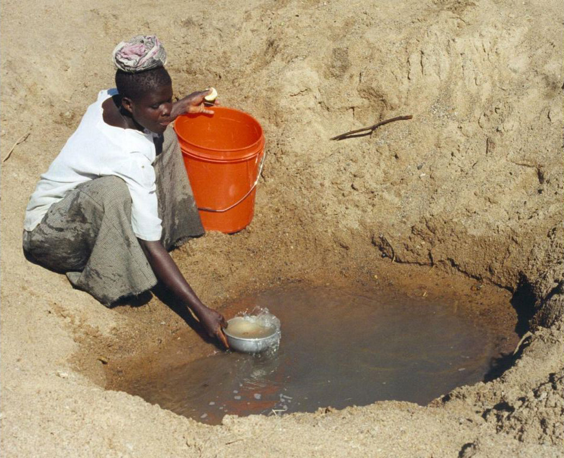

-
Western Sahara
Often described as the “Disputed Territory of Western Sahara,” the colony is home to thousands of Sahrawi refugees who suffer constant food and water shortages due to a decades-long struggle for control between Morocco and the Sahrawi tribal group known as the Polisario Front.
The conflict is unlikely to end due to natural resources located in the area and the possibility of offshore oil, which means the people will continue to go thirsty.

-
Libya
Libya’s water crisis caused by political upheaval while also suffering from lack of water and other resources.
Libya’s local water resources have never been reliable, but the added stresses of political change have acted to cut off water for much of the country’s population, including the capital of Tripoli. Violence and unrest typically rule news about Libya,
and the country goes through the shortage of fuel, food and water.
-
Yemen
The country has little natural fresh water to use and relies heavily on water from other sources. Political strife in the region often prevents the people from receiving many necessities and water is chief among them.
-
Jordan
Jordan is in the unfortunate position of being located in the politically divided Middle East while lacking the access to valuable natural resources that its equally waterless neighbors enjoy.
People living in Jordan must depend heavily on its own natural water resources, namely the Dead Sea and the Jordan River. Increased desertification and a growing population are acting together to decimate the water supply, and a plan for alternate sources has not been formulated.